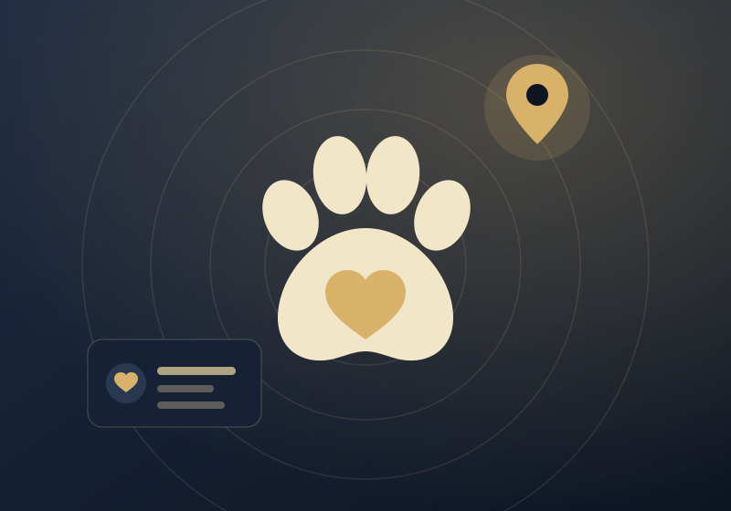
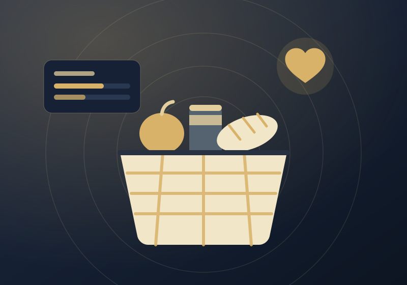
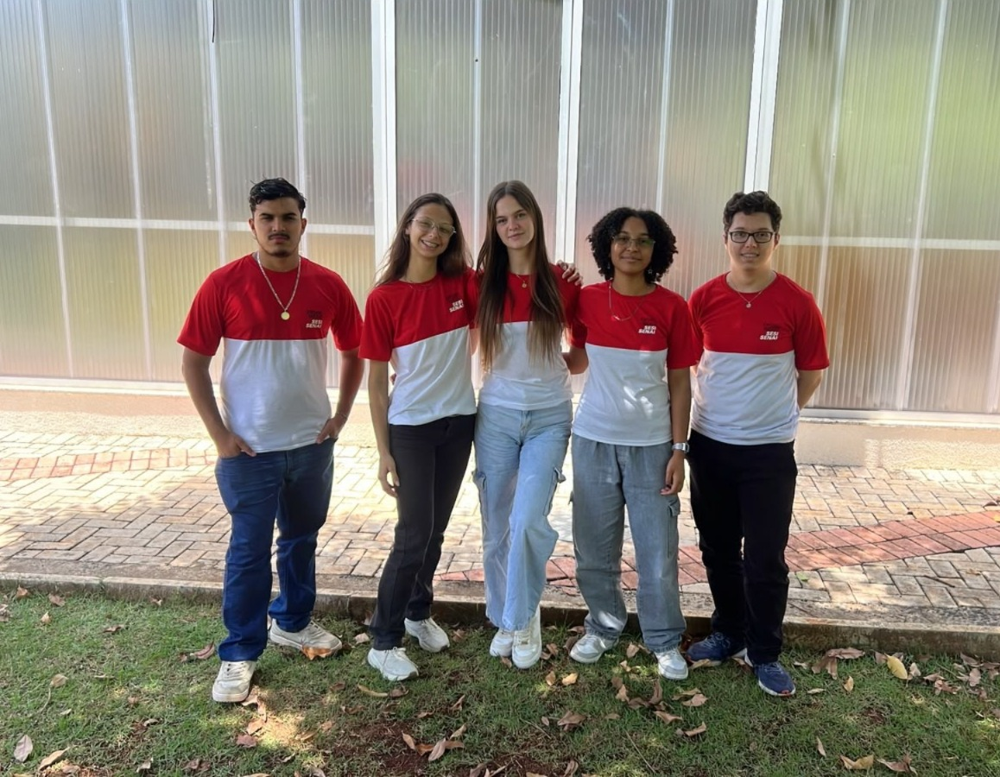
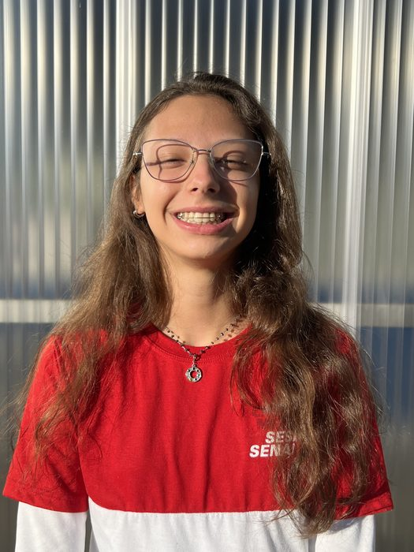
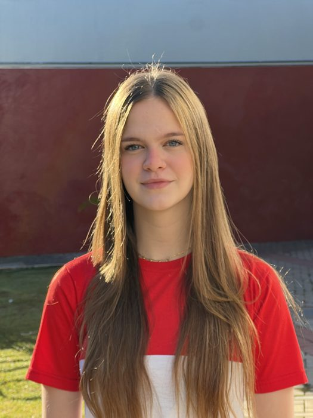

Sistemas que não conversam
Quando cada ferramenta vive isolada, a informação se perde no caminho. Criamos integrações entre plataformas para que os dados circulem sem retrabalho.
Conhecimento que impulsiona inovação.
A Athenas é uma iniciativa voltada ao desenvolvimento de soluções tecnológicas que unem criatividade, planejamento e conhecimento técnico. Por meio da análise de necessidades e da aplicação de diferentes tecnologias, buscamos transformar ideias em projetos capazes de gerar resultados e contribuir positivamente para diferentes contextos.
Somos uma equipe de desenvolvimento que acredita na tecnologia como ferramenta de transformação. Trabalhamos de forma colaborativa, reunindo diferentes conhecimentos e habilidades para planejar, desenvolver e aprimorar soluções digitais. Cada projeto representa uma oportunidade de aprender, experimentar novas possibilidades e construir ferramentas que respondam a necessidades concretas.
A Athenas nasceu no curso Técnico em Desenvolvimento de Sistemas do SENAI, em Mococa-SP.
Resolver problemas com inteligência: planejar primeiro, construir depois.
Quando cada ferramenta vive isolada, a informação se perde no caminho. Criamos integrações entre plataformas para que os dados circulem sem retrabalho.
Planilhas soltas e registros duplicados atrapalham decisões. Estruturamos as informações para que sejam fáceis de encontrar, de confiar e de usar.
O que se repete, a tecnologia pode fazer. Automatizamos rotinas para liberar o tempo das pessoas para o que realmente exige atenção.
Da análise do problema à entrega de uma solução, atuamos em todas as etapas e damos atenção especial à experiência de quem vai usar o sistema.
Antes de programar, observamos o contexto e identificamos o problema que realmente precisa ser resolvido.
Registramos o que o sistema precisa fazer e quais condições ele deve respeitar, com apoio de pesquisa e conversas.
Definimos arquitetura, casos de uso e etapas de desenvolvimento para que cada decisão tenha uma razão.
Criamos aplicações para o computador e o celular, com foco na experiência do usuário: interfaces claras e fáceis de usar.
Estruturamos tabelas, relacionamentos e regras para que as informações sejam organizadas e confiáveis.
Conectamos sensores, servidores, bancos de dados e aplicações por meio de APIs e protocolos.
Processos mais rápidos e menos retrabalho no dia a dia.
Partes do negócio falando a mesma língua e compartilhando dados.
Arquiteturas em camadas, prontas para crescer sem recomeçar do zero.
Os projetos não surgem apenas da programação: partem de um processo organizado de análise e desenvolvimento, apoiado em princípios da Engenharia de Software e em práticas ágeis (Scrum).
Observamos o contexto e definimos qual necessidade o projeto deve atender.
Estudamos o cenário, o público e as soluções que já existem.
Organizamos etapas, responsabilidades e tecnologias do projeto.
Registramos requisitos funcionais e não funcionais que guiam o desenvolvimento.
Desenhamos telas e fluxos para validar ideias antes de programar.
Desenvolvemos o sistema em ciclos curtos, de forma colaborativa.
Verificamos o funcionamento e registramos o que foi corrigido.
Ajustamos e evoluímos a solução a partir do que foi aprendido.
O nome vem da deusa grega Athena, símbolo de sabedoria, estratégia e inteligência. Diferente de Ares, deus da guerra bruta, Athena representava a guerra planejada, o que reforça a ideia de resolver problemas com inteligência.
Em grego, o nome da cidade é Ἀθῆναι (Athênai), um substantivo plural. “Athenas” remete à cidade, à deusa e ao trabalho coletivo de cinco pessoas.
O símbolo representa inteligência, estratégia e evolução. As asas remetem a progresso, inovação e direcionamento: crescimento guiado por planejamento.
Nosso slogan resume a proposta: transformar o que aprendemos em soluções tecnológicas eficientes, planejadas e orientadas a resultados.
#F7EFD8#556270#273142Cada projeto desenvolvido pela Athenas parte de uma necessidade e busca transformá-la em uma solução tecnológica. Nosso portfólio reúne iniciativas que exploram diferentes áreas de aplicação da tecnologia, desde o monitoramento industrial até propostas voltadas à proteção animal e ao apoio social. Conheça as soluções desenvolvidas e as ideias que estão em processo de planejamento.
Sistema Integrado de Monitoramento Ambiental de Estoques com IoT, Aplicativo Móvel e Plataforma Web
O Ákron é uma solução tecnológica desenvolvida para monitorar as condições ambientais de estoques por meio da integração entre sensores IoT, plataforma web e aplicativo móvel. O sistema permite acompanhar variáveis como temperatura, umidade, ruído e qualidade do ar, visualizar históricos de leituras e receber alertas sobre condições que exigem atenção. Seu objetivo é facilitar o acompanhamento dos ambientes de armazenamento, centralizar informações e auxiliar na tomada de decisões.
Ideias com pesquisa e análise próprias. Ainda não são sistemas implementados.

Proposta de plataforma que centraliza adoção, doações, denúncias de maus-tratos e localização de animais, aproximando ONGs, protetores independentes e pessoas interessadas em ajudar.
Nome provisório.
Ver apresentação
Proposta de plataforma que aproxima doadores, instituições sociais e famílias que precisam de apoio, organizando demandas e acompanhando as doações até a distribuição.
Nome provisório.
Ver apresentaçãoVeja quem somos, o desafio que escolhemos enfrentar e como o Ákron funciona, do sensor ao painel e ao aplicativo.
Cada integrante assume uma função de acordo com sua área de atuação. Passe o mouse (ou toque) sobre um cartão para ver o que cada pessoa faz no projeto.


Product Owner
Desenvolvedora Full Stack
Lidera a equipe e acompanha todas as etapas do projeto, participando do planejamento, desenvolvimento e integração das funcionalidades.

Documentação
Ver funçãoOrganiza a documentação técnica e os registros do projeto, descrevendo requisitos, processos e decisões de desenvolvimento.
Scrum Master
Desenvolvedora Back-end
Organiza o fluxo de trabalho, acompanha as atividades e trabalha na lógica do sistema, nas APIs e na integração com o banco de dados.
Desenvolvedor Front-end
Ver funçãoDesenvolve as interfaces do sistema, trabalhando na estrutura visual, na usabilidade e na interação entre os usuários e as funcionalidades.
Banco de Dados
Ver funçãoEstrutura e organiza o banco de dados, definindo tabelas, relacionamentos e mecanismos de gerenciamento das informações.
Sob orientação dos professores Leonardo Oliveira Casellato, Ricardo Akira Harada e Wellinton Cardoso Teodoro · SENAI
Conte para a equipe da Athenas. Ao enviar, o seu aplicativo de e-mail abre com a mensagem já preenchida e o assunto “Contato pelo site da Athenas”.